Bài 6: sửa-cột-hàng-ô
Bài 6: Sửa đổi Cột, Hàng và Ô
/en/excel/cell-basics/content/
Giới thiệu
Theo mặc định, mọi hàng và cột của sổ làm việc mới được đặt có cùngchiều caovàchiều rộng. Excel cho phép bạn sửa đổi chiều rộng của cột và chiều cao của hàng theo nhiều cách khác nhau, bao gồmgói văn bảnvàhợp nhất các ô.
Xem video bên dưới để tìm hiểu thêm về cách sửa đổi cột, hàng và ô.
Để sửa đổi độ rộng cột:
Trong ví dụ bên dưới của chúng tôi, cột C quá hẹp để hiển thị tất cả nội dung trong các ô này. Chúng tôi có thể hiển thị tất cả nội dung này bằng cách thay đổichiều rộngcủa cột C.
- Đặt chuột lêndòng cộttrongtiêu đề cộtđể con trỏ trở thànhmũi tên kép.
 2. Nhấp và kéo chuột đểtănghoặcgiảmchiều rộng cột.
2. Nhấp và kéo chuột đểtănghoặcgiảmchiều rộng cột.
 3. Thả chuột.chiều rộng cộtsẽ được thay đổi.
3. Thả chuột.chiều rộng cộtsẽ được thay đổi.
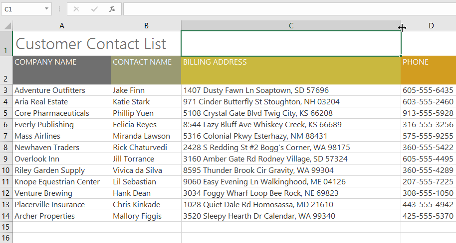
Với dữ liệu số, ô sẽ hiển thịdấu thăng(#######) nếu cột quá hẹp. Chỉ cầntăng chiều rộng cộtđể hiển thị dữ liệu.
Để Tự động khớp chiều rộng cột:
Tính năngAutoFitsẽ cho phép bạn đặt chiều rộng của cột để vừa với nội dung của nótự động.
- Đặt chuột lêndòng cộttrongtiêu đề cộtđể con trỏ trở thànhmũi tên kép.
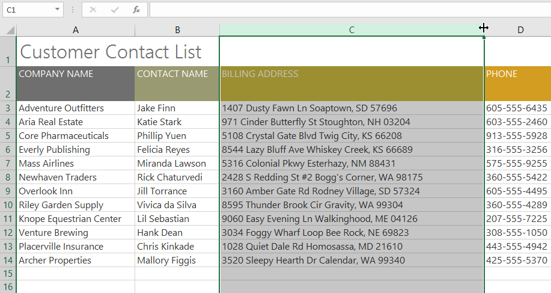
2. Bấm đúp chuột.độ rộng cộtsẽ được thay đổi tự động để phù hợp với nội dung.
Bạn cũng có thể Tự động điều chỉnh chiều rộng cho nhiều cột cùng lúc. Chỉ cần chọn các cột bạn muốn Tự động khớp, sau đó chọn lệnhTự động khớp chiều rộng cộttừ trình đơn thả xuốngĐịnh dạngtrên tabTrang chủ. Phương pháp này cũng có thể được sử dụng chochiều cao hàng.
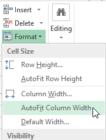
Để sửa đổi chiều cao hàng:
- Định vịcon trỏtrêndòng hàngđể con trỏ trở thànhmũi tên kép.
 2. Nhấp và kéo chuột đểtănghoặcgiảmchiều cao của hàng.
2. Nhấp và kéo chuột đểtănghoặcgiảmchiều cao của hàng.
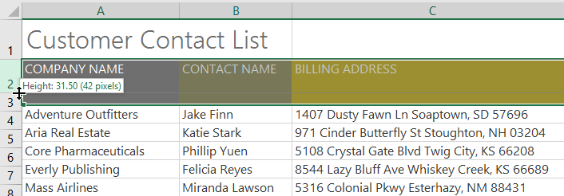
3. Thả chuột.chiều caocủa hàng đã chọn sẽ được thay đổi.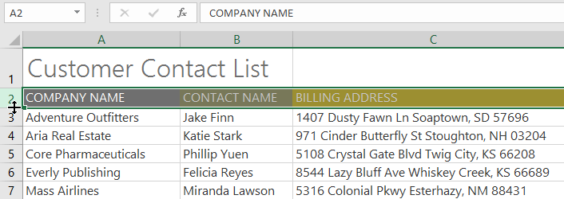
Để sửa đổi tất cả các hàng hoặc cột:
Thay vì thay đổi kích thước hàng và cột riêng lẻ, bạn có thể sửa đổi chiều cao và chiều rộng của từng hàng và cột cùng một lúc. Phương pháp này cho phép bạn đặtkích thước đồng đềucho mỗi hàng và cột trong bảng tính của bạn. Trong ví dụ của chúng tôi, chúng tôi sẽ đặtchiều cao hàng đồng đều.
- Xác định vị trí và nhấp vào nútChọn tất cảngay bên dưới hộptênđể chọn mọi ô trong trang tính.
 2. Đặt chuột lêndòngđể con trỏ trở thànhmũi tên kép.
3. Nhấp và kéo chuột đểtănghoặcgiảmchiều cao của hàng, sau đó thả chuột khi đã hài lòng. Chiều cao hàng sẽ được thay đổi cho toàn bộ bảng tính.
2. Đặt chuột lêndòngđể con trỏ trở thànhmũi tên kép.
3. Nhấp và kéo chuột đểtănghoặcgiảmchiều cao của hàng, sau đó thả chuột khi đã hài lòng. Chiều cao hàng sẽ được thay đổi cho toàn bộ bảng tính.
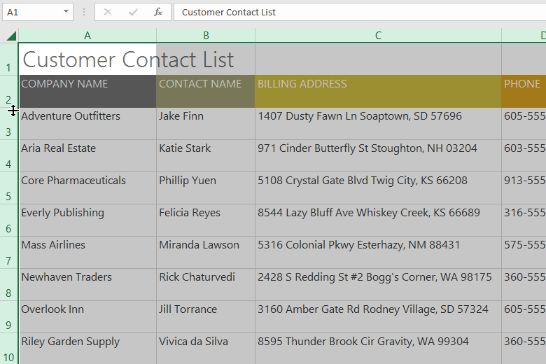
Chèn, xóa, di chuyển và ẩn
Sau khi làm việc với sổ làm việc được một thời gian, bạn có thể thấy rằng bạn muốnchèncột hoặc hàng mới,xóacác hàng hoặc cột nhất định,di chuyểnchúng đến một vị trí khác trong trang tính hoặc thậm chíẩnchúng.
Để chèn hàng:
- Chọnhàngtiêu đềbên dưới nơi bạn muốn hàng mới xuất hiện. Trong ví dụ này, chúng tôi muốn chèn một hàng giữa hàng 4 và 5, vì vậy chúng tôi sẽ chọnhàng 5.
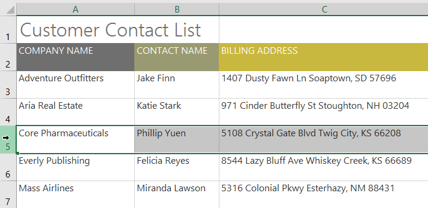
2. Nhấp vào lệnhChèntrên tabTrang chủ.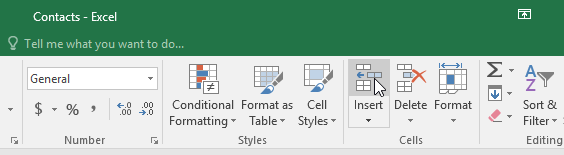
3. hàng mớisẽ xuất hiệnphía trênhàng đã chọn.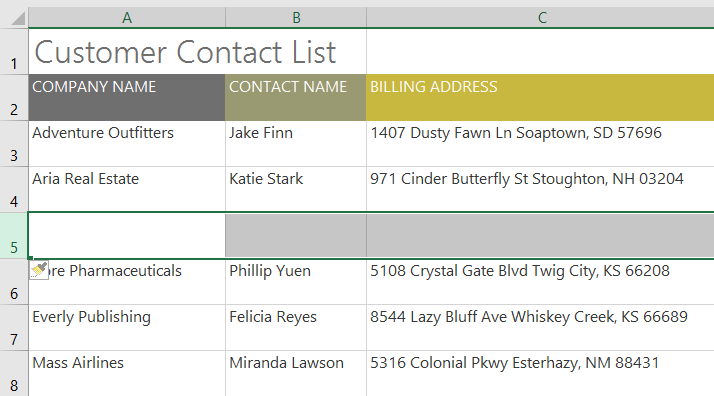
Khi chèn hàng, cột hoặc ô mới, bạn sẽ thấybiểu tượng cọ vẽbên cạnh các ô được chèn. Nút này cho phép bạn chọn cách Excel định dạng các ô này. Theo mặc định, Excel định dạng các hàng được chèn có định dạng giống với các ô ở hàng trên. Để truy cập các tùy chọn bổ sung, hãy di chuột qua biểu tượng, sau đó nhấp vàomũi tên thả xuống.
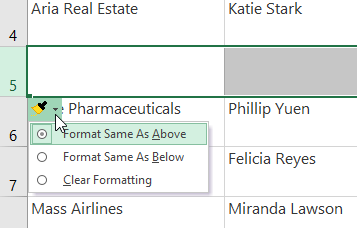
Để chèn cột:
- Chọncộttiêu đềở bên phải nơi bạn muốn cột mới xuất hiện. Ví dụ: nếu bạn muốn chèn một cột giữa cột D và E, hãy chọncột E.
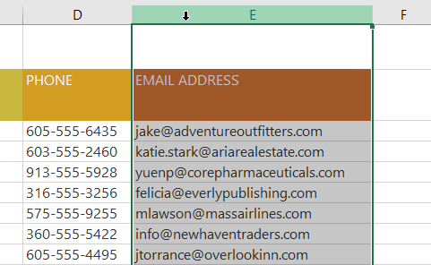
2. Nhấp vào lệnhChèntrên tabTrang chủ.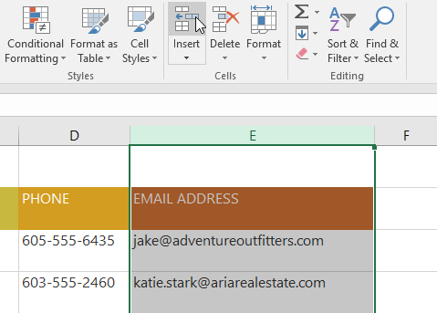
3. cột mớisẽ xuất hiệnở bên tráicủa cột đã chọn.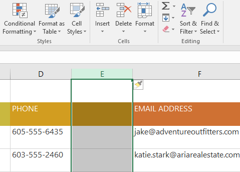
Khi chèn hàng và cột, hãy đảm bảo chọn toàn bộ hàng hoặc cột bằng cách nhấp vàotiêu đề. Nếu bạn chỉ chọn một ô trong hàng hoặc cột, lệnhInsertsẽ chỉ chèn một ô mới.
Để xóa một hàng hoặc cột:
Thật dễ dàng để xóa một hàng hoặc cột mà bạn không cần nữa. Trong ví dụ của chúng tôi, chúng tôi sẽ xóa một hàng, nhưng bạn có thể xóa một cột theo cách tương tự.
- Chọnhàngbạn muốn xóa. Trong ví dụ của chúng tôi, chúng tôi sẽ chọnhàng 9.
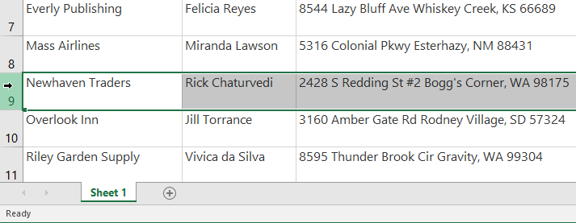
2. Nhấp vào lệnhXóatrên tabTrang chủ.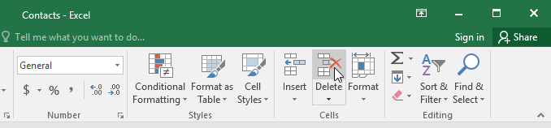
3. Hàng đã chọnsẽ bị xóa và những hàng xung quanh nó sẽchuyển đổi. Trong ví dụ của chúng tôi,hàng10đã di chuyển lên nên bây giờ làhàng 9.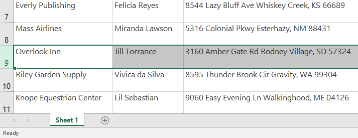
Điều quan trọng là phải hiểu sự khác biệt giữaxóamột hàng hoặc cột và chỉxóanội dung của nó. Nếu bạn muốn xóanội dungkhỏi một hàng hoặc cột mà không khiến những nội dung khác phải dịch chuyển, hãynhấp chuột phải vào mộttiêu đề, sau đó chọnXóa nội dungtừ trình đơn thả xuống.
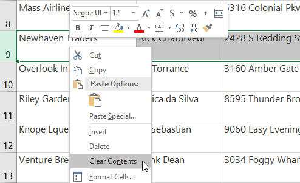
Để di chuyển một hàng hoặc cột:
Đôi khi bạn có thể muốndi chuyểnmột cột hoặc hàng để sắp xếp lại nội dung trang tính của mình. Trong ví dụ của chúng tôi, chúng tôi sẽ di chuyển một cột, nhưng bạn có thể di chuyển một hàng theo cách tương tự.
- Chọntiêu đề cộtmong muốn cho cột bạn muốn di chuyển.
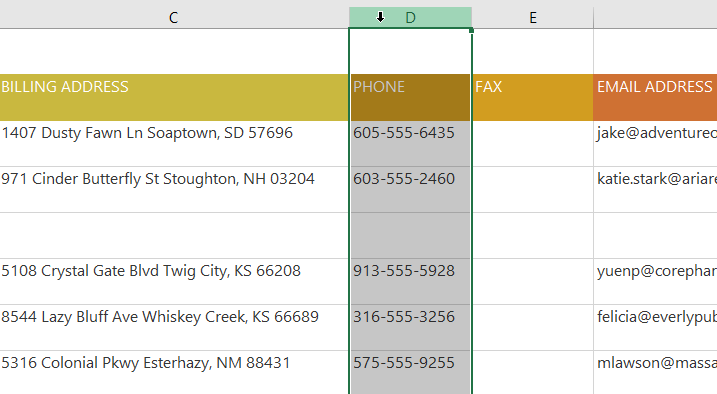
2. Nhấp vào lệnhCuttrên tabHomehoặc nhấnCtrl+Xtrên bàn phím của bạn.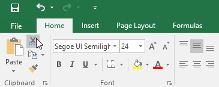
3. Chọncộttiêu đềở bên phải nơi bạn muốn di chuyển cột. Ví dụ: nếu bạn muốn di chuyển một cột giữa cột E và F, hãy chọncột F.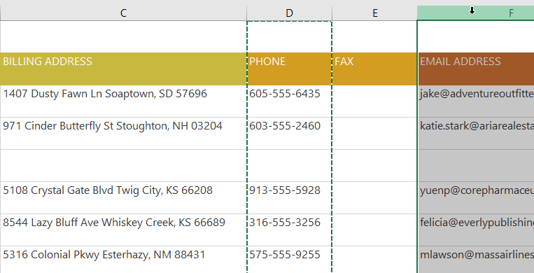
4. Nhấp vào lệnhChèntrên tabTrang chủ, sau đó chọnChèn ô cắttừ trình đơn thả xuống.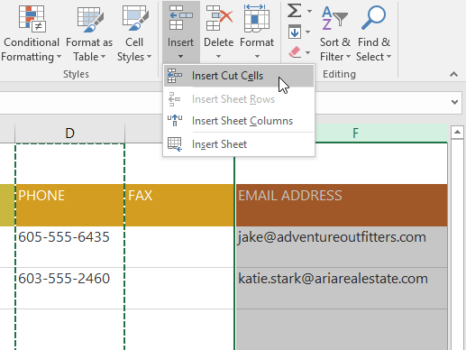
5. Cột sẽ đượcdi chuyểnđến vị trí đã chọn và các cột xung quanh nó sẽ dịch chuyển.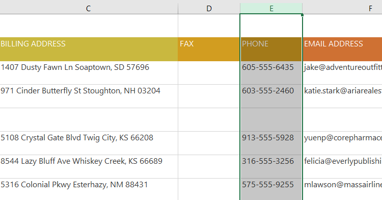
Bạn cũng có thể truy cập các lệnhCutvàInsertbằng cách nhấp chuột phải và chọnmong muốnlệnhtừ trình đơn thả xuống.
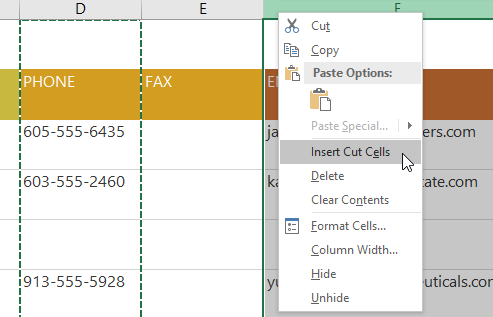
Để ẩn và hiện một hàng hoặc cột:
Đôi khi, bạn có thể muốnso sánhcác hàng hoặc cột nhất định mà không thay đổi cách tổ chức trang tính của mình. Để thực hiện việc này, Excel cho phép bạnẩnhàng và cột nếu cần. Trong ví dụ của chúng tôi, chúng tôi sẽ ẩn một số cột nhưng bạn có thể ẩn các hàng theo cách tương tự.
- Chọncộtbạn muốnẩn, nhấp chuột phải, sau đó chọnẨntừ menuđịnh dạng. Trong ví dụ của chúng tôi, chúng tôi sẽ ẩn các cột C, D và E.
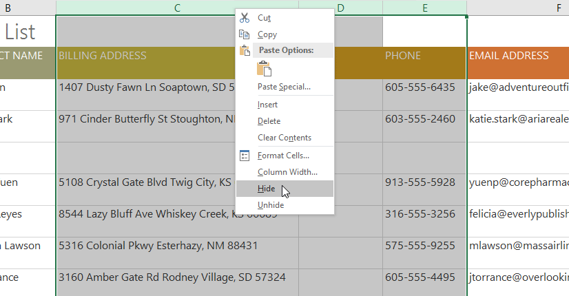
2. Các cột sẽ bịẩn.Dòng cột màu xanh lá câycho biết vị trí của các cột bị ẩn.3. Đểbỏ ẩncác cột, hãy chọn các cột ởcả haicạnhcủa các cột bị ẩn. Trong ví dụ của chúng tôi, chúng tôi sẽ chọn các cộtBvàF. Sau đó nhấp chuột phải và chọnBỏ ẩntừ trình đơnđịnh dạng.
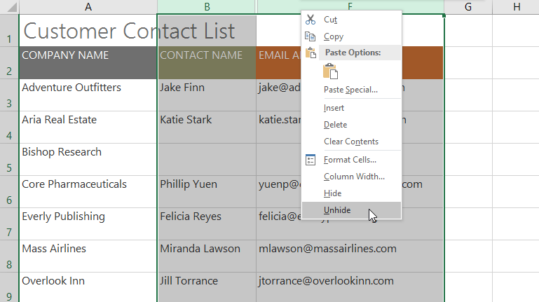
4. Các cột bị ẩn sẽ xuất hiện trở lại.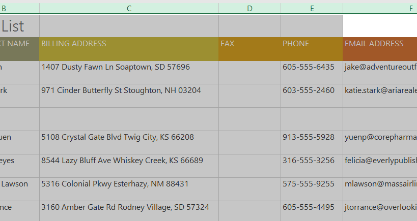
Ngắt dòng văn bản và hợp nhất các ô
Bất cứ khi nào bạn có quá nhiều nội dung ô cần hiển thị trong một ô, bạn có thể quyết địnhngắt văn bảnhoặchợp nhấtô thay vì đổi kích thước cột. Việc ngắt dòng văn bản sẽ tự động sửa đổichiều cao hàngcủa ô, cho phép hiển thị nội dung ôtrên nhiều dòng. Việc hợp nhất cho phép bạn kết hợp một ô với các ô trống liền kề để tạomột ô lớn.
Để ngắt dòng văn bản trong ô:
- Chọn các ô bạn muốn ngắt dòng. Trong ví dụ này, chúng tôi sẽ chọn các ô trongcột C.
- Nhấp vào lệnhNgắt văn bảntrên tabTrang chủ.
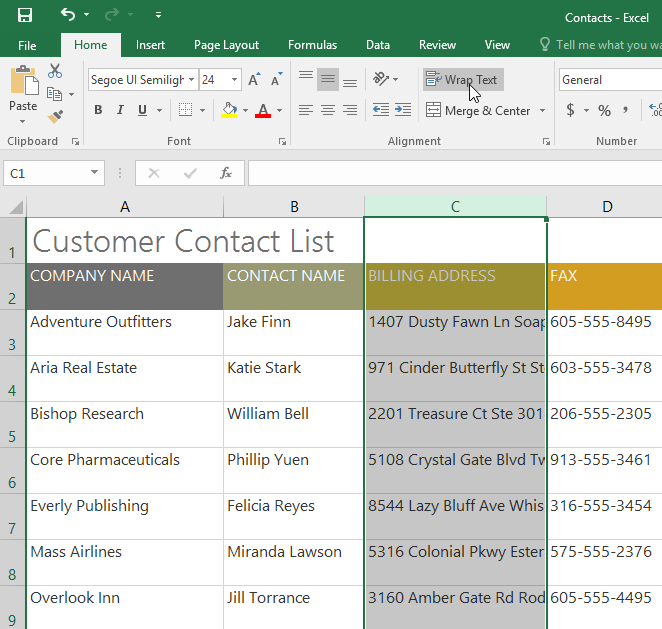
3. Văn bản trong các ô đã chọn sẽ đượcngắt.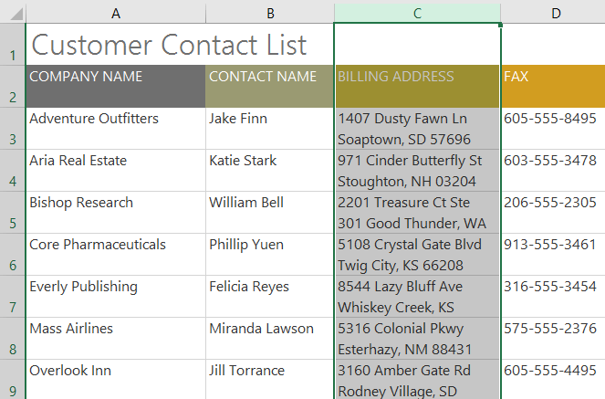
Nhấp lại vào lệnhBọc văn bảnđểmở góivăn bản.
Để hợp nhất các ô bằng lệnh Hợp nhất & Trung tâm:
- Chọnphạm vi ôbạn muốn hợp nhất. Trong ví dụ của chúng tôi, chúng tôi sẽ chọnA1:F1.
- Nhấp vào lệnhHợp nhất & Trung tâmtrên tabTrang chủ. Trong ví dụ của chúng tôi, chúng tôi sẽ chọn phạm vi ôA1:F1.
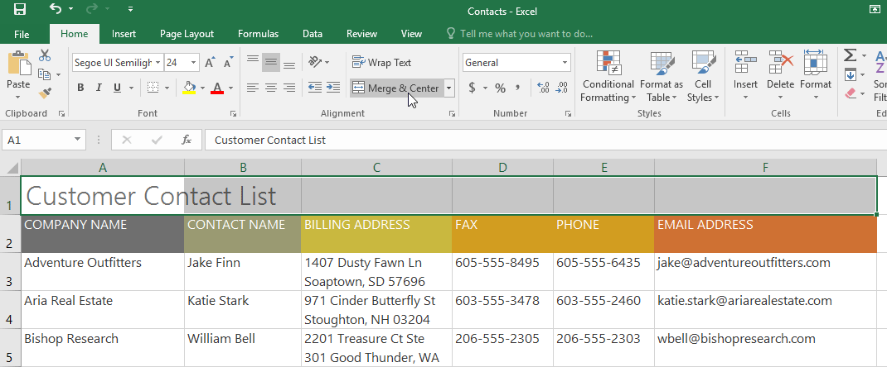
3. Các ô đã chọn sẽ đượchợp nhấtvà văn bản sẽ đượccăn giữa.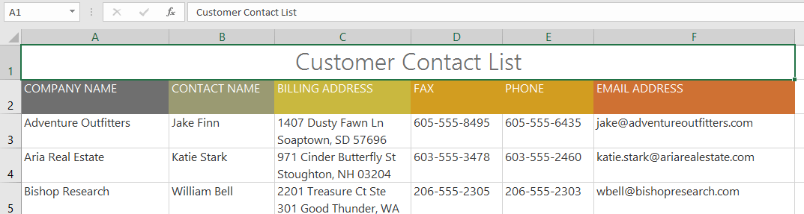
Để truy cập các tùy chọn hợp nhất bổ sung:
Nếu bạn nhấp vào mũi tên thả xuống bên cạnh lệnhHợp nhất & Trung tâmtrên tabTrang chủ, trình đơn thả xuốngHợp nhấtsẽ xuất hiện.
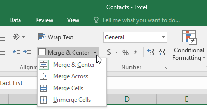
Từ đây, bạn có thể chọn:
- Hợp nhất & Căn giữa: Thao tác này sẽ hợp nhất các ô đã chọn thànhmột ôvàgiữavăn bản.
- Hợp nhất khắp: Thao tác này sẽ hợp nhất các ô đã chọn thànhô lớn hơntrong khi vẫn tách biệt từnghàng.
- Hợp nhất Ô: Thao tác này sẽ hợp nhất các ô đã chọn thành một ô nhưngkhông căn giữavăn bản.
- Hủy hợp nhất các ô: Thao tác này sẽ hủy hợp nhất các ô đã chọn.
Hãy cẩn thận khi sử dụng tính năng này. Nếu bạn hợp nhất nhiều ô chứa dữ liệu, Excel sẽ chỉ giữ lại nội dung của ô phía trên bên trái và loại bỏ mọi thứ khác.
Căn giữa vùng chọn
Việc hợp nhất có thể hữu ích cho việc tổ chức dữ liệu của bạn nhưng nó cũng có thể gây ra các vấn đề sau này. Ví dụ: có thể khó di chuyển, sao chép và dán nội dung từ các ô đã hợp nhất. Một cách thay thế tốt cho việc hợp nhất làCenter Across Selection, cách này tạo ra hiệu ứng tương tự mà không thực sự kết hợp các ô.
Xem video bên dưới để tìm hiểu lý do tại sao bạn nên sử dụng Center Across Selection thay vì hợp nhất các ô.
Để sử dụng Center Across Selection:
- Chọn phạm vi ô mong muốn. Trong ví dụ của chúng tôi, chúng tôi sẽ chọnA1:F1.Lưu ý: Nếu bạn đã hợp nhất các ô này, bạn nênhủy hợp nhấtchúngtrước khi tiếp tục bước 2.
- Nhấp vàomũi tên nhỏở góc dưới bên phải của nhómCăn chỉnhtrên tabTrang chủ.
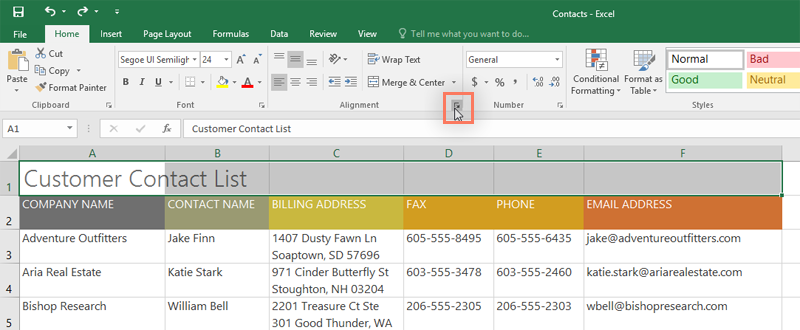
3. Một hộp thoại sẽ xuất hiện. Xác định vị trí và chọn trình đơn thả xuốngNgang, chọnCenter Across Selection, sau đó nhấp vàoOK.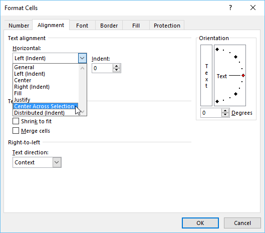
4. Nội dung sẽ được căn giữa trên phạm vi ô đã chọn. Như bạn có thể thấy, điều này tạo ra kết quả trực quan tương tự như việc hợp nhất và căn giữa, nhưng nó giữ nguyên từng ô trong A1:F1.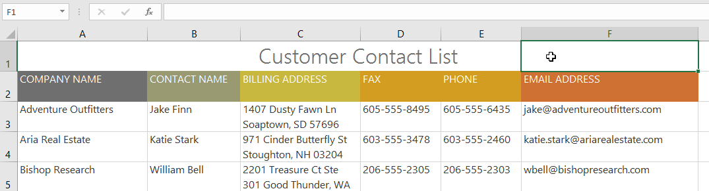
Thử thách!
- Mở sổ làm việc thực hành của chúng tôi.
- Tự động điều chỉnh độ rộng cộtcho toàn bộ sổ làm việc.
- Sửa đổichiều cao hàngcho hàng 3 đến 14 thành22,5 (30 pixel).
- Xóahàng 10.
- Chènmột cột vào bên trái cột C. NhậpLIÊN HỆ THỨ HAIvào ôC2.
- Đảm bảo ôC2vẫn được chọn và chọnGói văn bản.
- Hợp nhất và căn giữaô A1:F1.
- ẨncộtĐịa chỉ thanh toánvàĐiện thoại.
- Khi bạn hoàn tất, sổ làm việc của bạn sẽ trông giống như thế này:

/en/excel/formatting-cells/content/